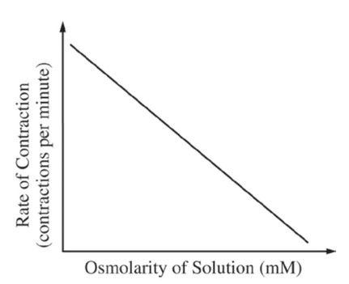

Paramecia are unicellular protists that have contractile vacuoles to remove excess intracellular water. In an experimental investigation, paramecia were placed in salt solutions of increasing osmolarity. The rate at which the contractile vacuole contracted to pump out excess water was determined and plotted against osmolarity of the solutions, as shown in the graph. Which of the following is the correct explanation for the data?